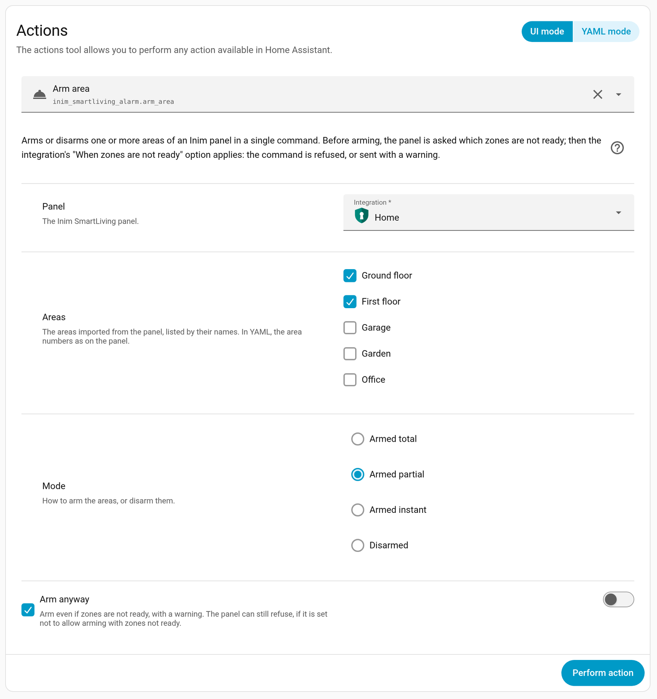
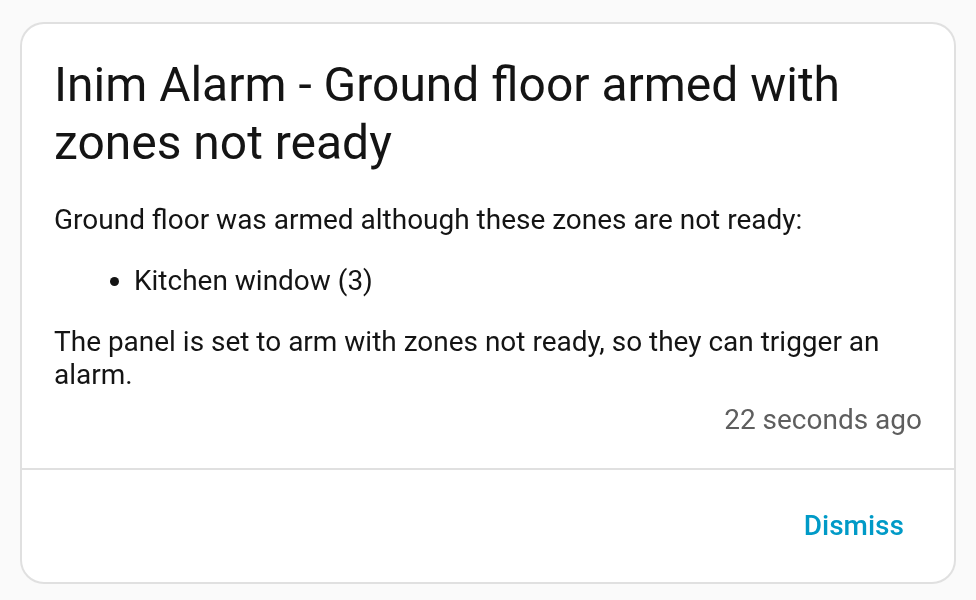

Actions and events¶
This page shows how to arm, disarm and run scenarios from dashboards and automations, and how automations can react to the integration's events. The reference at the end lists every field.
From a dashboard¶
- The whole panel: add the alarm panel entity to Home Assistant's alarm panel card. Its buttons run the scenarios you mapped in the options.
-
One area: add the area's switch (on arms, off disarms) or its arming mode select (choose the mode). A tile card with the select's options feature shows the modes as a list:


-
A scenario: add its button.
- An output: add its switch or light (see Outputs).
Arming areas from automations¶
Use the Arm area action to arm or disarm one or more areas of a panel in a single command, so they change together. In the automation editor, add the action Arm area, pick the panel, tick the areas and choose the mode:

In YAML, areas are the area numbers as on the panel:
action: inim_smartliving_alarm.arm_area
data:
config_entry_id: your_config_entry_id
areas: [1, 3]
mode: partial
To run a scenario from an automation, use Activate scenario (see below). You can try any action from Settings → Tools → Actions (on versions before 2026.11, Developer tools → Actions).
Resetting the alarm memory¶
After an alarm, the panel keeps the alarm memory of the areas involved until it is reset; the Area N Alarm memory sensors show it. The Alarm Reset action resets every area of the panel that has an alarm or tamper memory:
action: inim_smartliving_alarm.alarm_reset
target:
entity_id: alarm_control_panel.your_panel_name
You can call it from a script, an automation or a dashboard button.
Zones not ready¶
Before it arms an area or runs a scenario, the integration asks the panel which zones are not ready: zones that are not at rest and would be armed. Then the option When zones are not ready (in General settings) decides:
- Refuse (the default): nothing is sent. You get an error that lists the zones, for example "Area 3 was not armed because these zones are not ready: Kitchen window (12)".
-
Arm anyway and warn: the command is sent, and a notification lists the zones. They can set off an alarm unless they are closed or bypassed in time.

force: true on the Arm area and Activate scenario actions arms anyway for that call, whatever the option says. Disarming is never checked. Either way, the inim_smartliving_alarm_zones_not_ready event fires, for example to announce the open zones.
Which commands are checked, and the panel's own rule
- Checked: the area switch, the arming mode select and Arm area (arming an area), and the scenario button, the alarm panel and Activate scenario (running a scenario).
- Zones the panel bypasses by itself when arming (autobypassable zones) are not listed.
- The installer can also set the panel itself not to allow arming with zones not ready. The integration reads that setting with the panel configuration and shows it in the Refuses arming with zones not ready sensor (and as
panel_refuses_not_readyin the event). When it is on, the panel refuses such a command even when you arm anyway or useforce: the integration still sends it, the message says the panel refused it, and the event'sactionisrefused_by_panel. - The panel's own rule depends on each zone's programming (for example, delayed zones do not stop total arming, and zones with
no_arming_if_not_readystop every mode), so it may let through zones the integration lists. When the setting is off, the panel arms whatever the zones' programming says.
The event log on a dashboard¶
A Markdown card shows the last events of the event log sensor. Replace sensor.home_home_event_log with your event log sensor's ID:
type: markdown
title: Alarm events
content: >-
{% for e in (state_attr('sensor.home_home_event_log', 'event_log') or [])[:10] %}
- {{ as_timestamp(e.timestamp) | timestamp_custom('%d/%m %H:%M') }}
· {{ e.description }}{% if e.authorized_by %} · {{ e.authorized_by }}{% endif %}{% if e.affected_areas %} · {{ e.affected_areas }}{% endif %}
{% endfor %}
The repository's Examples folder has a larger dashboard, made for version 0.3: its entity IDs and some cards may need changes.
Actions¶
None of the actions returns a response. If a command is not carried out, the action fails with a message that says why (see When the panel refuses a command).
Arm area¶
inim_smartliving_alarm.arm_area: arms or disarms one or more areas of a panel in a single command. Before arming, it checks the zones (see Zones not ready).
| Field | Required | Type and values | Default | Example |
|---|---|---|---|---|
config_entry_id |
yes | the panel (a list of your panels in the editor) | – | 01J… |
areas |
yes | a list of area numbers, as on the panel; the editor lists the imported areas by name | – | [1, 3] |
mode |
yes | total, partial, instant, disarm |
– | partial |
force |
no | true arms even if zones are not ready |
false |
true |
When it fails
- With several panels, the editor shows each area number with the name it has on every panel that imports it; the panel you pick decides which one is armed.
- An area that is not imported from that panel (for example, one you unticked after writing the automation) is refused with a message, and nothing is sent.
- It also fails when the panel is not found or not loaded, when zones are not ready and the option says Refuse, and when the panel refuses the command.
Activate scenario¶
inim_smartliving_alarm.activate_scenario: runs a scenario of the panel. Before running it, it checks the zones (see Zones not ready).
| Field | Required | Type and values | Default | Example |
|---|---|---|---|---|
config_entry_id |
yes | the panel | – | 01J… |
scenario |
yes | the scenario number, as on the panel (from 1); the editor lists the imported scenarios by name | – | 2 |
force |
no | true runs it even if zones are not ready |
false |
true |
action: inim_smartliving_alarm.activate_scenario
data:
config_entry_id: your_config_entry_id
scenario: 2
A scenario that is not imported from that panel is refused with a message. A failed activation also shows a notification and fires the inim_smartliving_alarm_scenario_activation_failed event.
Alarm Reset¶
inim_smartliving_alarm.alarm_reset: resets the alarm and tamper memory of every area of the panel that has one.
| Field | Required | Type and values | Default | Example |
|---|---|---|---|---|
target entity_id |
yes | the panel's alarm panel entity | – | alarm_control_panel.home |
Entities of other integrations in the target are skipped. If the panel's integration is not loaded, the action fails with a message.
Re-read panel configuration¶
inim_smartliving_alarm.reread_panel_configuration: reads the panel configuration again and reloads the integration, like the button of the same name (see Setup).
| Field | Required | Type and values | Default | Example |
|---|---|---|---|---|
config_entry_id |
yes | the panel | – | 01J… |
action: inim_smartliving_alarm.reread_panel_configuration
data:
config_entry_id: your_config_entry_id
It fails, and keeps the stored configuration, when the panel cannot be reached, is in programming mode, or returns an incomplete configuration.
Events¶
Automations can react to these events with an event trigger.
Zones not ready¶
inim_smartliving_alarm_zones_not_ready fires each time an area is armed or a scenario is run with zones not ready, whether the command was refused or sent anyway.
| Field | Values |
|---|---|
config_entry_id |
the panel's configuration entry |
target |
the area's name, several area names separated by commas (from Arm area), or the scenario's name |
action |
refused (not sent), armed_anyway (sent with a warning), refused_by_panel (sent, and the panel refused it) |
zones |
the zones not ready, each with zone_id (the number) and zone_name (the zone's name on the panel, for example Kitchen window, or Zone 12 when it has none) |
panel_refuses_not_ready |
true or false: whether the panel itself refuses arming with zones not ready; null before the configuration was read again by this version |
triggers:
- trigger: event
event_type: inim_smartliving_alarm_zones_not_ready
Scenario activation failed¶
inim_smartliving_alarm_scenario_activation_failed fires each time a scenario cannot be run: from the alarm panel, a scenario button or Activate scenario. A scenario refused because zones are not ready fires both events.
| Field | Values |
|---|---|
entity_unique_id |
the unique ID of the entity that ran it |
entity_name |
the name of that entity |
action |
what was asked, in English, for example arm away or activate scenario 'Night' |
scenario_index |
the scenario number minus 1 |
scenario_name |
the scenario's name |
reason |
zones_blocked, no_areas_identified, unknown_zones_error, no_data_available, disarm_failed, panel_programming, command_failed, unknown, or the reason the panel gave (see below) |
panel_result |
the panel's reason when it refused the command, unknown for a reason the integration does not know, or null when the panel did not refuse it |
blocking_zones |
the zones that stopped it, each with zone_id, zone_name, status (not_ready, alarmed, short or tamper) and areas (by name) |
message |
a description, always in English, whatever Home Assistant's language |
The panel's reasons are invalid_code, open_zones, code_not_enabled, already_in_state, slot_out_of_range, slot_not_connected, null_terminal, cannot_be_bypassed, no_areas, double_zone_error, output_not_enabled, areas_armed and refused; what each means is on Troubleshooting.
Switching outputs¶
See Outputs.